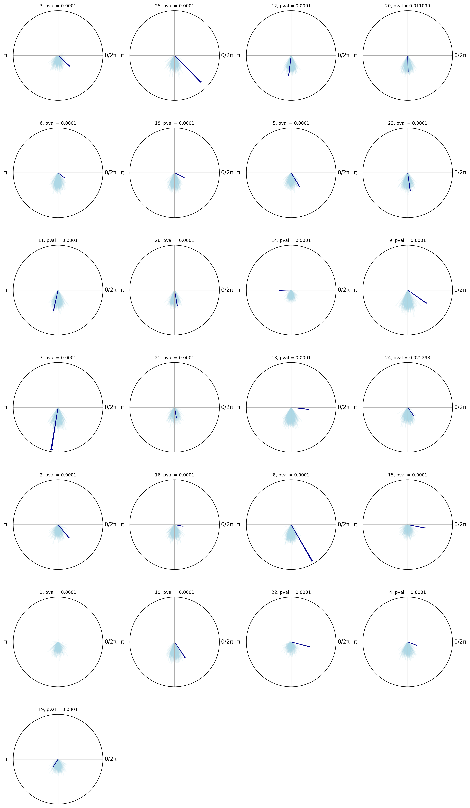

Group-level permutation test between observed samples and surrogate samples (peak-to-peak shuffled)#
In this tutorial, we will perform a permutation test between observed samples and surrogate samples (peak-to-peak shuffled) at group level to assess whether the observed samples are significantly different from what would be expected by chance.
[ ]:
import pickle as pkl
import numpy as np
from pathlib import Path
import math
import matplotlib.pyplot as plt
from pyriodic import Circular, CircPlot
from pyriodic.permutation import permutation_test_against_surrogate, permutation_test_within_units
from pyriodic.surrogate import surrogate_shuffle_breath_cycles
/Users/au661930/Library/CloudStorage/OneDrive-Aarhusuniversitet/Dokumenter/projects/_BehaviouralBreathing/code/AnalysisBreathingBehaviour/BreathingBehaviourVenv/lib/python3.13/site-packages/tqdm/auto.py:21: TqdmWarning: IProgress not found. Please update jupyter and ipywidgets. See https://ipywidgets.readthedocs.io/en/stable/user_install.html
from .autonotebook import tqdm as notebook_tqdm
[2]:
data_path = Path("../../data/raw/intermediate")
circulars = {}
pas = {}
events_samples = {}
for file_path in data_path.iterdir():
if not file_path.name.endswith(".pkl"):
continue
subj_id = file_path.name.split("_")[0]
with open(file_path, 'rb') as f:
data = pkl.load(f)
circulars[subj_id] = data["circ"]
pas[subj_id] = data["phase_ts"]
behavioral_data = data["behav_data"]
events_samples[subj_id] = behavioral_data["event_samples"]
[4]:
rng = np.random.default_rng(seed=42)
results = {}
for subj_id in circulars:
circ = circulars[subj_id]
observed = circ["target"]
pa = pas[subj_id]
events_samp = events_samples[subj_id]
labels = circ.labels
# find the event samples for the target events in circ
target_event_samples = [samp for samp, label in zip(events_samp, labels) if "target" in label]
surr_samples = surrogate_shuffle_breath_cycles(pa, target_event_samples, n_surrogate=500, rng=rng)
# Run participant-level permutation test
obs_stat, pval, obs_vs_surr, surr_vs_surr = permutation_test_against_surrogate(
observed.data,
surrogate_samples=surr_samples,
alternative="greater",
n_permutations = 10000,
return_obs_and_surr_stats=True
)
# per-participant summary stats (means of distributions)
circ_surr_samples = Circular.from_multiple(
[Circular(samp, labels=[i]*len(samp)) for i, samp in enumerate(surr_samples)]
)
results[subj_id] = {
"obs_vs_surr": obs_vs_surr,
"surr_vs_surr": surr_vs_surr,
"pval": pval,
"null_samples": circ_surr_samples
}
100%|██████████| 500/500 [00:09<00:00, 54.77it/s]
Generated 500 surrogate time series by shuffling breathing cycles.
p val: 9.999000099990002e-05, observed stat: 248778.000, mean null stat: 124959.336
100%|██████████| 500/500 [00:08<00:00, 58.31it/s]
Generated 500 surrogate time series by shuffling breathing cycles.
p val: 9.999000099990002e-05, observed stat: 250000.000, mean null stat: 125037.666
100%|██████████| 500/500 [00:06<00:00, 71.66it/s]
Generated 500 surrogate time series by shuffling breathing cycles.
p val: 9.999000099990002e-05, observed stat: 177611.000, mean null stat: 124969.135
100%|██████████| 500/500 [00:13<00:00, 36.14it/s]
Generated 500 surrogate time series by shuffling breathing cycles.
p val: 0.0110988901109889, observed stat: 135346.000, mean null stat: 125056.913
100%|██████████| 500/500 [00:07<00:00, 71.04it/s]
Generated 500 surrogate time series by shuffling breathing cycles.
p val: 9.999000099990002e-05, observed stat: 213765.000, mean null stat: 125022.391
100%|██████████| 500/500 [00:13<00:00, 37.52it/s]
Generated 500 surrogate time series by shuffling breathing cycles.
p val: 9.999000099990002e-05, observed stat: 212276.500, mean null stat: 124976.242
100%|██████████| 500/500 [00:07<00:00, 65.08it/s]
Generated 500 surrogate time series by shuffling breathing cycles.
p val: 9.999000099990002e-05, observed stat: 213105.500, mean null stat: 124943.482
100%|██████████| 500/500 [00:08<00:00, 58.33it/s]
Generated 500 surrogate time series by shuffling breathing cycles.
p val: 9.999000099990002e-05, observed stat: 158202.500, mean null stat: 124988.426
100%|██████████| 500/500 [00:08<00:00, 58.03it/s]
Generated 500 surrogate time series by shuffling breathing cycles.
p val: 9.999000099990002e-05, observed stat: 183399.000, mean null stat: 125029.957
100%|██████████| 500/500 [00:09<00:00, 53.65it/s]
Generated 500 surrogate time series by shuffling breathing cycles.
p val: 9.999000099990002e-05, observed stat: 173890.500, mean null stat: 124960.962
100%|██████████| 500/500 [00:08<00:00, 56.70it/s]
Generated 500 surrogate time series by shuffling breathing cycles.
p val: 9.999000099990002e-05, observed stat: 243045.000, mean null stat: 125054.518
100%|██████████| 500/500 [00:11<00:00, 44.77it/s]
Generated 500 surrogate time series by shuffling breathing cycles.
p val: 9.999000099990002e-05, observed stat: 241921.000, mean null stat: 124940.423
100%|██████████| 500/500 [00:13<00:00, 36.79it/s]
Generated 500 surrogate time series by shuffling breathing cycles.
p val: 9.999000099990002e-05, observed stat: 249987.000, mean null stat: 125015.033
100%|██████████| 500/500 [00:09<00:00, 52.38it/s]
Generated 500 surrogate time series by shuffling breathing cycles.
p val: 9.999000099990002e-05, observed stat: 184049.500, mean null stat: 124939.167
100%|██████████| 500/500 [00:11<00:00, 42.32it/s]
Generated 500 surrogate time series by shuffling breathing cycles.
p val: 9.999000099990002e-05, observed stat: 249835.000, mean null stat: 124963.246
100%|██████████| 500/500 [00:09<00:00, 53.47it/s]
Generated 500 surrogate time series by shuffling breathing cycles.
p val: 0.022297770222977704, observed stat: 134348.500, mean null stat: 125018.483
100%|██████████| 500/500 [00:08<00:00, 58.70it/s]
Generated 500 surrogate time series by shuffling breathing cycles.
p val: 9.999000099990002e-05, observed stat: 214868.500, mean null stat: 125022.945
100%|██████████| 500/500 [00:10<00:00, 47.76it/s]
Generated 500 surrogate time series by shuffling breathing cycles.
p val: 9.999000099990002e-05, observed stat: 237933.000, mean null stat: 125012.349
100%|██████████| 500/500 [00:08<00:00, 59.14it/s]
Generated 500 surrogate time series by shuffling breathing cycles.
p val: 9.999000099990002e-05, observed stat: 250000.000, mean null stat: 124948.190
100%|██████████| 500/500 [00:09<00:00, 55.02it/s]
Generated 500 surrogate time series by shuffling breathing cycles.
p val: 9.999000099990002e-05, observed stat: 241614.000, mean null stat: 124986.220
100%|██████████| 500/500 [00:07<00:00, 65.56it/s]
Generated 500 surrogate time series by shuffling breathing cycles.
p val: 9.999000099990002e-05, observed stat: 242464.000, mean null stat: 125008.940
100%|██████████| 500/500 [00:07<00:00, 65.94it/s]
Generated 500 surrogate time series by shuffling breathing cycles.
p val: 9.999000099990002e-05, observed stat: 201220.000, mean null stat: 124982.019
100%|██████████| 500/500 [00:10<00:00, 48.48it/s]
Generated 500 surrogate time series by shuffling breathing cycles.
p val: 9.999000099990002e-05, observed stat: 244729.000, mean null stat: 124964.490
100%|██████████| 500/500 [00:08<00:00, 56.19it/s]
Generated 500 surrogate time series by shuffling breathing cycles.
p val: 9.999000099990002e-05, observed stat: 217631.500, mean null stat: 125026.536
100%|██████████| 500/500 [00:09<00:00, 52.27it/s]
Generated 500 surrogate time series by shuffling breathing cycles.
p val: 9.999000099990002e-05, observed stat: 238541.000, mean null stat: 124997.982
[ ]:
surr = [results[subj_id]["surr_vs_surr"] for subj_id in results]
obs = [results[subj_id]["obs_vs_surr"] for subj_id in results]
group_obs_stat, group_pval, group_null = permutation_test_within_units(
data1=obs,
data2=surr,
n_permutations=10000,
alternative="greater",
verbose=True,
return_null_distribution=True
)
Generating null distribution: 100%|██████████| 10000/10000 [00:02<00:00, 3342.64it/s]
Observed statistic = 0.1141, p = 0.0001
Is this effect consistent across all participants?#
[7]:
n_subjects = len(results)
n_cols = 4
n_rows = math.ceil(n_subjects / n_cols)
fig, axes = plt.subplots(
n_rows, n_cols,
dpi = 300,
figsize = (n_cols*3, n_rows*3),
subplot_kw={'projection': 'polar'},
sharex=True,
sharey=True
)
axes = axes.flatten()
for i, subj_id in enumerate(circulars):
tmp_result = results[subj_id]
circ_obs_target = circulars[subj_id]["target"]
circ_null = tmp_result["null_samples"]
ax = axes[i]
tmp_plot = CircPlot(circ_null, ax=ax)
tmp_plot.add_circular_mean(alpha = 0.1, color = "lightblue")
tmp_plot.add_arrows([circ_obs_target.mean()], [circ_obs_target.r()], label = "Observed", color = "darkblue")
ax.set_title(f"{subj_id}, pval = {tmp_result['pval'].round(6)}", fontsize=8)
# Hide unused axes
for j in range(i + 1, len(axes)):
axes[j].axis("off")
plt.tight_layout()
